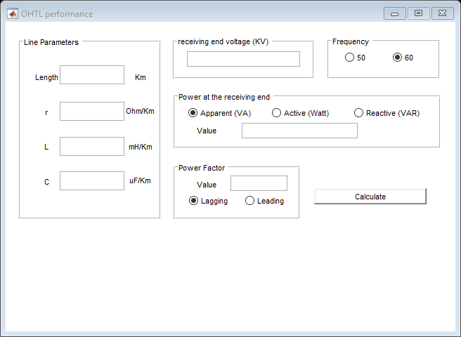

function varargout = untitled(varargin) % UNTITLED MATLAB code for untitled.fig % UNTITLED, by itself, creates a new UNTITLED or raises the existing % singleton*. % % H = UNTITLED returns the handle to a new UNTITLED or the handle to % the existing singleton*. % % UNTITLED('CALLBACK',hObject,eventData,handles,...) calls the local % function named CALLBACK in UNTITLED.M with the given input arguments. % % UNTITLED('Property','Value',...) creates a new UNTITLED or raises the % existing singleton*. Starting from the left, property value pairs are % applied to the GUI before untitled_OpeningFcn gets called. An % unrecognized property name or invalid value makes property application % stop. All inputs are passed to untitled_OpeningFcn via varargin. % % *See GUI Options on GUIDE's Tools menu. Choose "GUI allows only one % instance to run (singleton)". % % See also: GUIDE, GUIDATA, GUIHANDLES % Edit the above text to modify the response to help untitled % Last Modified by GUIDE v2.5 25-Apr-2019 21:42:26 % Begin initialization code - DO NOT EDIT gui_Singleton = 1; gui_State = struct('gui_Name', mfilename, ... 'gui_Singleton', gui_Singleton, ... 'gui_OpeningFcn', @untitled_OpeningFcn, ... 'gui_OutputFcn', @untitled_OutputFcn, ... 'gui_LayoutFcn', [] , ... 'gui_Callback', []); if nargin && ischar(varargin{1}) gui_State.gui_Callback = str2func(varargin{1}); end if nargout [varargout{1:nargout}] = gui_mainfcn(gui_State, varargin{:}); else gui_mainfcn(gui_State, varargin{:}); end % End initialization code - DO NOT EDIT % --- Executes just before untitled is made visible. function untitled_OpeningFcn(hObject, eventdata, handles, varargin) % This function has no output args, see OutputFcn. % hObject handle to figure % eventdata reserved - to be defined in a future version of MATLAB % handles structure with handles and user data (see GUIDATA) % varargin command line arguments to untitled (see VARARGIN) % Choose default command line output for untitled handles.output = hObject; % Update handles structure guidata(hObject, handles); % UIWAIT makes untitled wait for user response (see UIRESUME) % uiwait(handles.figure1); % --- Outputs from this function are returned to the command line. function varargout = untitled_OutputFcn(hObject, eventdata, handles) % varargout cell array for returning output args (see VARARGOUT); % hObject handle to figure % eventdata reserved - to be defined in a future version of MATLAB % handles structure with handles and user data (see GUIDATA) % Get default command line output from handles structure varargout{1} = handles.output; % --- Executes on button press in powrea. function powrea_Callback(hObject, eventdata, handles) % hObject handle to powrea (see GCBO) % eventdata reserved - to be defined in a future version of MATLAB % handles structure with handles and user data (see GUIDATA) % Hint: get(hObject,'Value') returns toggle state of powrea % -------------------------------------------------------------------- function Untitled_1_Callback(hObject, eventdata, handles) % hObject handle to Untitled_1 (see GCBO) % eventdata reserved - to be defined in a future version of MATLAB % handles structure with handles and user data (see GUIDATA) % --- Executes on selection change in popupmenu1. function popupmenu1_Callback(hObject, eventdata, handles) % hObject handle to popupmenu1 (see GCBO) % eventdata reserved - to be defined in a future version of MATLAB % handles structure with handles and user data (see GUIDATA) % Hints: contents = cellstr(get(hObject,'String')) returns popupmenu1 contents as cell array % contents{get(hObject,'Value')} returns selected item from popupmenu1 % --- Executes during object creation, after setting all properties. function popupmenu1_CreateFcn(hObject, eventdata, handles) % hObject handle to popupmenu1 (see GCBO) % eventdata reserved - to be defined in a future version of MATLAB % handles empty - handles not created until after all CreateFcns called % Hint: popupmenu controls usually have a white background on Windows. % See ISPC and COMPUTER. if ispc && isequal(get(hObject,'BackgroundColor'), get(0,'defaultUicontrolBackgroundColor')) set(hObject,'BackgroundColor','white'); end % -------------------------------------------------------------------- function Untitled_2_Callback(hObject, eventdata, handles) % hObject handle to Untitled_2 (see GCBO) % eventdata reserved - to be defined in a future version of MATLAB % handles structure with handles and user data (see GUIDATA) % -------------------------------------------------------------------- function Untitled_3_Callback(hObject, eventdata, handles) % hObject handle to Untitled_3 (see GCBO) % eventdata reserved - to be defined in a future version of MATLAB % handles structure with handles and user data (see GUIDATA) % -------------------------------------------------------------------- function Untitled_4_Callback(hObject, eventdata, handles) % hObject handle to Untitled_4 (see GCBO) % eventdata reserved - to be defined in a future version of MATLAB % handles structure with handles and user data (see GUIDATA) % -------------------------------------------------------------------- function pwrvalue_Callback(hObject, eventdata, handles) % hObject handle to pwrvalue (see GCBO) % eventdata reserved - to be defined in a future version of MATLAB % handles structure with handles and user data (see GUIDATA) function edit1_Callback(hObject, eventdata, handles) % hObject handle to pwrvalue (see GCBO) % eventdata reserved - to be defined in a future version of MATLAB % handles structure with handles and user data (see GUIDATA) % Hints: get(hObject,'String') returns contents of pwrvalue as text % str2double(get(hObject,'String')) returns contents of pwrvalue as a double % --- Executes during object creation, after setting all properties. function pwrvalue_CreateFcn(hObject, eventdata, handles) % hObject handle to pwrvalue (see GCBO) % eventdata reserved - to be defined in a future version of MATLAB % handles empty - handles not created until after all CreateFcns called % Hint: edit controls usually have a white background on Windows. % See ISPC and COMPUTER. if ispc && isequal(get(hObject,'BackgroundColor'), get(0,'defaultUicontrolBackgroundColor')) set(hObject,'BackgroundColor','white'); end function length_Callback(hObject, eventdata, handles) % hObject handle to length (see GCBO) % eventdata reserved - to be defined in a future version of MATLAB % handles structure with handles and user data (see GUIDATA) % Hints: get(hObject,'String') returns contents of length as text % str2double(get(hObject,'String')) returns contents of length as a double % --- Executes during object creation, after setting all properties. function length_CreateFcn(hObject, eventdata, handles) % hObject handle to length (see GCBO) % eventdata reserved - to be defined in a future version of MATLAB % handles empty - handles not created until after all CreateFcns called % Hint: edit controls usually have a white background on Windows. % See ISPC and COMPUTER. if ispc && isequal(get(hObject,'BackgroundColor'), get(0,'defaultUicontrolBackgroundColor')) set(hObject,'BackgroundColor','white'); end function r_Callback(hObject, eventdata, handles) % hObject handle to r (see GCBO) % eventdata reserved - to be defined in a future version of MATLAB % handles structure with handles and user data (see GUIDATA) % Hints: get(hObject,'String') returns contents of r as text % str2double(get(hObject,'String')) returns contents of r as a double % --- Executes during object creation, after setting all properties. function r_CreateFcn(hObject, eventdata, handles) % hObject handle to r (see GCBO) % eventdata reserved - to be defined in a future version of MATLAB % handles empty - handles not created until after all CreateFcns called % Hint: edit controls usually have a white background on Windows. % See ISPC and COMPUTER. if ispc && isequal(get(hObject,'BackgroundColor'), get(0,'defaultUicontrolBackgroundColor')) set(hObject,'BackgroundColor','white'); end function L_Callback(hObject, eventdata, handles) % hObject handle to L (see GCBO) % eventdata reserved - to be defined in a future version of MATLAB % handles structure with handles and user data (see GUIDATA) % Hints: get(hObject,'String') returns contents of L as text % str2double(get(hObject,'String')) returns contents of L as a double % --- Executes during object creation, after setting all properties. function L_CreateFcn(hObject, eventdata, handles) % hObject handle to L (see GCBO) % eventdata reserved - to be defined in a future version of MATLAB % handles empty - handles not created until after all CreateFcns called % Hint: edit controls usually have a white background on Windows. % See ISPC and COMPUTER. if ispc && isequal(get(hObject,'BackgroundColor'), get(0,'defaultUicontrolBackgroundColor')) set(hObject,'BackgroundColor','white'); end function C_Callback(hObject, eventdata, handles) % hObject handle to C (see GCBO) % eventdata reserved - to be defined in a future version of MATLAB % handles structure with handles and user data (see GUIDATA) % Hints: get(hObject,'String') returns contents of C as text % str2double(get(hObject,'String')) returns contents of C as a double % --- Executes during object creation, after setting all properties. function C_CreateFcn(hObject, eventdata, handles) % hObject handle to C (see GCBO) % eventdata reserved - to be defined in a future version of MATLAB % handles empty - handles not created until after all CreateFcns called % Hint: edit controls usually have a white background on Windows. % See ISPC and COMPUTER. if ispc && isequal(get(hObject,'BackgroundColor'), get(0,'defaultUicontrolBackgroundColor')) set(hObject,'BackgroundColor','white'); end % --- Executes on button press in freq50. function freq50_Callback(hObject, eventdata, handles) % hObject handle to freq50 (see GCBO) % eventdata reserved - to be defined in a future version of MATLAB % handles structure with handles and user data (see GUIDATA) % Hint: get(hObject,'Value') returns toggle state of freq50 % --- Executes on button press in freq60. function freq60_Callback(hObject, eventdata, handles) % hObject handle to freq60 (see GCBO) % eventdata reserved - to be defined in a future version of MATLAB % handles structure with handles and user data (see GUIDATA) % Hint: get(hObject,'Value') returns toggle state of freq60 function PowerFactor_Callback(hObject, eventdata, handles) % hObject handle to PowerFactor (see GCBO) % eventdata reserved - to be defined in a future version of MATLAB % handles structure with handles and user data (see GUIDATA) % Hints: get(hObject,'String') returns contents of PowerFactor as text % str2double(get(hObject,'String')) returns contents of PowerFactor as a double % --- Executes during object creation, after setting all properties. function PowerFactor_CreateFcn(hObject, eventdata, handles) % hObject handle to PowerFactor (see GCBO) % eventdata reserved - to be defined in a future version of MATLAB % handles empty - handles not created until after all CreateFcns called % Hint: edit controls usually have a white background on Windows. % See ISPC and COMPUTER. if ispc && isequal(get(hObject,'BackgroundColor'), get(0,'defaultUicontrolBackgroundColor')) set(hObject,'BackgroundColor','white'); end % --- Executes on button press in lag. function lag_Callback(hObject, eventdata, handles) % hObject handle to lag (see GCBO) % eventdata reserved - to be defined in a future version of MATLAB % handles structure with handles and user data (see GUIDATA) % Hint: get(hObject,'Value') returns toggle state of lag % --- Executes on button press in lead. function lead_Callback(hObject, eventdata, handles) % hObject handle to lead (see GCBO) % eventdata reserved - to be defined in a future version of MATLAB % handles structure with handles and user data (see GUIDATA) % Hint: get(hObject,'Value') returns toggle state of lead function Voltage_Callback(hObject, eventdata, handles) % hObject handle to Voltage (see GCBO) % eventdata reserved - to be defined in a future version of MATLAB % handles structure with handles and user data (see GUIDATA) % Hints: get(hObject,'String') returns contents of Voltage as text % str2double(get(hObject,'String')) returns contents of Voltage as a double % --- Executes during object creation, after setting all properties. function Voltage_CreateFcn(hObject, eventdata, handles) % hObject handle to Voltage (see GCBO) % eventdata reserved - to be defined in a future version of MATLAB % handles empty - handles not created until after all CreateFcns called % Hint: edit controls usually have a white background on Windows. % See ISPC and COMPUTER. if ispc && isequal(get(hObject,'BackgroundColor'), get(0,'defaultUicontrolBackgroundColor')) set(hObject,'BackgroundColor','white'); end function edit11_Callback(hObject, eventdata, handles) % hObject handle to edit11 (see GCBO) % eventdata reserved - to be defined in a future version of MATLAB % handles structure with handles and user data (see GUIDATA) % Hints: get(hObject,'String') returns contents of edit11 as text % str2double(get(hObject,'String')) returns contents of edit11 as a double % --- Executes during object creation, after setting all properties. function edit11_CreateFcn(hObject, eventdata, handles) % hObject handle to edit11 (see GCBO) % eventdata reserved - to be defined in a future version of MATLAB % handles empty - handles not created until after all CreateFcns called % Hint: edit controls usually have a white background on Windows. % See ISPC and COMPUTER. if ispc && isequal(get(hObject,'BackgroundColor'), get(0,'defaultUicontrolBackgroundColor')) set(hObject,'BackgroundColor','white'); end % --- Executes on button press in Calculate. function Calculate_Callback(hObject, eventdata, handles) %************************************************************ % getting power type powerpnl = get(handles.pnlpower,'SelectedObject'); powertype = get(powerpnl,'string') % getting the phase (lag/lead) pfpnl = get(handles.pnlpf,'SelectedObject'); pftype = get(pfpnl,'string') %*********************************************************************** %getting frequency string frequencypnl = get(handles.pnlfrequency,'SelectedObject'); %frequency from text to number f = str2num (get(frequencypnl,'string')) %getting voltage value volt = str2num(get(handles.Voltage,'String'))*1000 %getting power value power = str2num(get(handles.edit11,'String')) %getting power factor value PF = str2num(get(handles.PowerFactor,'String')) %getting lenght l = str2num(get(handles.length,'String')) %getting resistance r = str2num(get(handles.r,'String')) %getting inductance L = str2num(get(handles.L,'String'))*10^(-3) %getting capacitance C = str2num(get(handles.C,'String'))*10^(-6) %********************************************************************** w = 2*pi*f phase = acos(PF) RF= sin(phase) n=1 lm = l %dividing long OHTL into multiples of a medium OHTL while 1 if lm >250 n = n*2 lm = lm/2 else break end end Z = (r+i*w*L)*lm Y = i*w*C*lm %********************************************************************* %phase and reactive factor calculations if pftype == 'Lagging' RF = (-1)*RF phase = (-1)*phase else RF = RF end %calculating current at the receiving end if powertype == 'Apparent (VA)' Ir = power/(sqrt(3)*volt) elseif powertype == 'Active (Watt)' Ir = power/(sqrt(3)*volt*PF) else Ir = power / (sqrt(3)*volt*RF) end %vector form of the current [x y] = pol2cart(phase,Ir) IrVec = x+ i*y %******************************************************************* %calculationg ABCD parameters for medium and shortparameter if l < 80 A = 1 B = Z C = 0 D = 1 else A = (1 + (Z*Y)/2) B = Z C = Y*(1 + (Z*Y)/4) D = A end %calculating sending end voltage and current if l <= 250 Vs = (((A*volt)/sqrt (3)) + B* IrVec)*sqrt(3) %line voltage Is = ((C*volt)/sqrt (3)) + D* IrVec else parameters = [ A B; C D] parameters = parameters^n receiving = [volt/sqrt(3); IrVec] sending = parameters * receiving Vs = sending(1) *sqrt(3) %line voltage Is = sending (2) end VolReg = ((abs(Vs)-abs(volt))*100)/abs(volt) P = sqrt(3)*abs(Vs)*abs(Is)*cos(angle(Vs)-angle(Is)) efficiency = (power/P)*100 %outputing the results set(handles.text20, 'string', num2str(A)) set(handles.text21, 'string', num2str(B)) set(handles.text22, 'string', num2str(C)) set(handles.text23, 'string', num2str(D)) set(handles.text26, 'string', num2str(abs(Is))) set(handles.text27, 'string', num2str(abs(Vs)/1000)) set(handles.text29, 'string', num2str(efficiency)) set(handles.text31, 'string', num2str(VolReg)) set(handles.text33, 'string', strcat('<',num2str(rad2deg(angle(Is))))) set(handles.text34, 'string', strcat('<',num2str(rad2deg(angle(Vs))))) set(handles.results,'Visible','on')